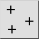
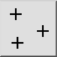
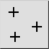
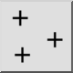

Ponto único
Barra de Ferramenta / Ícone:
 

Menu: Draw > Ponto > Ponto único
Atalho: P, O
Comandos: point | po
Esta é uma tradução automática.
Barra de Ferramenta / Ícone:
 

Menu: Draw > Ponto > Ponto único
Atalho: P, O
Comandos: point | po
Este comando é usado para desenhar pontos únicos. Os pontos são visualmente representados por uma pequena cruz.